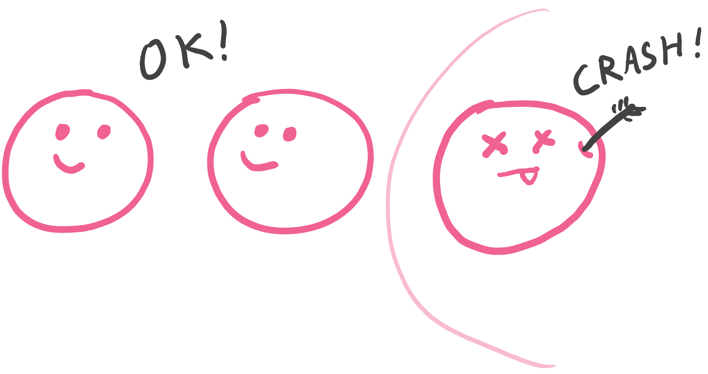
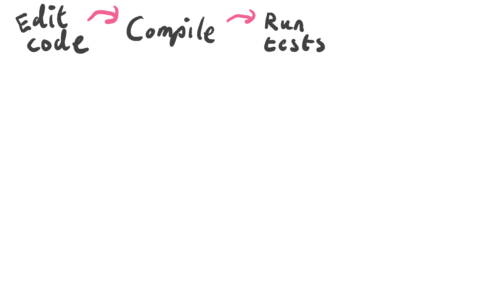
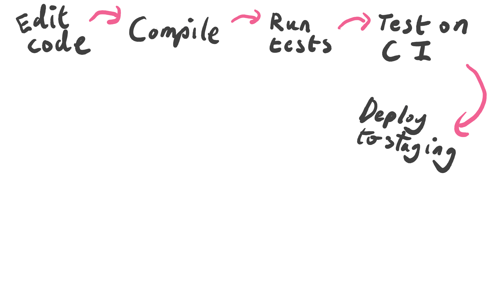
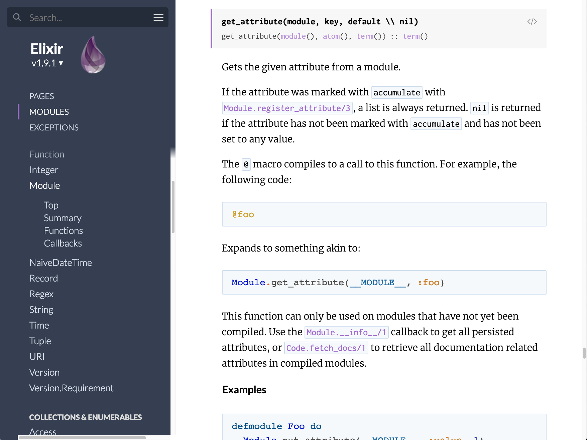
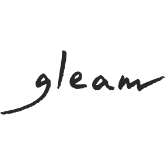

class: middle center slide-bold <img style="width: 65%" src="img/lucy-charcoal-3.svg"> --- class: middle ## Hi, I'm Louis! ??? I'm Louis, I've been a heavy user of Elixir and Erlang for about 5 years now. I'm the founder of a small ad-tech company called Waive that uses Elixir for everything, and I also do some open source work. I wrote Dogma, a style linter for Elixir, later succeeded by Credo, which we're going to hear about later from Rene. After that I wrote mix test.watch, an automated test runner for Elixir, and exfmt, an Elixir auto-formatter that was succeeded by the official formatter released in Elixir v1.6. I've also done some work inside the Elixir compiler. For example I taught the inspect protocol about colours, and I used this to add syntax highlighting to the iex. But today I'm not here to talk about any of those things, I'm here to talk about Gleam! What is Gleam? --- class: slide-dark middle center <img style="width: 75%; padding-right: 45px" src="img/gleam-pink.svg"> ??? Gleam is a new functional programming language for the BEAM. Like Elixir it compiles to Erlang and adds no runtime overhead so we should always be at least as performant as typical Elixir and Erlang code. Gleam is intended to integrate well into the larger BEAM ecosystem, so it's straightforward and zero cost to call Erlang and Elixir from Gleam, or to call Gleam from Erlang and Elixir. We want to enrichen and contribute to the BEAM ecosystem through collaboration, not fracture it. Possibly the most distinct and interesting of Gleam's features is it's type system. Gleam has a strong static type system inspired by ML family languages such as Elm, Haskell, and Rust. I think this type system is where most the value of Gleam can be found. --- class: slide-bold middle center <br> <br> <br> <br> <br> # Why Gleam? ??? Here's the first question I want to answer- Why make this new language at all when there are already so many other languages out there? --- class: middle <img class="color-adjust center-element" src="img/the-beam.png"> ??? A large part of the answer to that question is the BEAM, the Erlang virtual machine. The Erlang virtual machine is a fantastic piece of software and one of the best language runtimes available today. --- ## Processes ??? It has powerful concurrency features in the form of actor model, allowing us to spin up hundreds of thousands of lightweight threads called processes inside our programs, making full use of modern computer processors, which these days have more and more cores. --- ## Messages <br> <img class="color-adjust center-element" style="max-width: 90%" src="img/messages.png"> ??? These processes communicate by sending messages to each other, but what's amazing about this is that it doesn't matter if the processes are running on the same instance of the BEAM, a second instance of the BEAM on the same computer, or even on a completely different machine on the network. Distributed computing is built into the BEAM, a typical BEAM program written in Erlang or Elixir can be turned into distributed program that runs on a cluster of networked computers with minimal effort. --- ## Garbage collection ??? Like most runtimes the BEAM offers garbage collection, however what makes it unusual is that it is performed on a per-process basis. This mean there is no stop-the-world pause for memory to be cleaned up, meaning programs on the BEAM can have predictable low latency and are often referred to as being soft real time. --- ## Fault tolerance  ??? And perhaps most excitingly, Erlang processes act as error bulkheads, meaning that when something does go wrong and your code crashes the problem is contained to the smallest possible sub-system and will not impact any other work being undertaken by the program. An Erlang program that takes advantage of this property can self heal by restarting the process and trying again, hopefully succeeding now that any corrupt state has been shed, must like pods on the popular Kubernetes container orchestrator from Google. What makes the BEAM different from Kubernetes is that this state shedding can happen at a much more fine grained level- we won't lose the state of the entire program and all the requests being handled by it, instead just the single process that had the problem. --- ## Why a new language? <br> <img class="center-element" src="img/beam-languages.png"> ??? So yes, the BEAM is wonderful piece of technology to work with, and I'm sure that you'll all understand why I wanted to use target it. However I've not answer the question of why make a new language at all- we already have several fantastic languages on the BEAM such as Erlang, Elixir, and LFE. Why spend all this time creating Gleam when we could use one of these? To answer this question I'd like to take a closer look at the BEAM's self healing properties and how that impacts us as developers and operators of software. --- class: minimal-padding middle <img class="color-adjust" src="img/cycle-1.png"> ??? It's a normal day at work and I've got a change to make to an application. Perhaps I'm adding a feature, maybe we're removing a bug, it doesn't matter, I'm making some sort of change. I spend some time editing the code, making my changes. --- class: minimal-padding middle <img class="color-adjust" src="img/cycle-2.png"> ??? Once satisfied run the compiler to build the application, which completes successfully, reporting no problems. --- class: minimal-padding middle  ??? After that I run the unit tests on my laptop to ensure I've not broken anything, and then push my changes to GitHub. --- class: minimal-padding middle <img class="color-adjust" src="img/cycle-4.png"> ??? Once uploaded the code triggers a build on the CI server. It runs all the unit and integration tests, and runs some linters such as Credo to spot any mistakes. --- class: minimal-padding middle  ??? If all those checks pass then it deploys the new application version to a staging environment. --- class: minimal-padding middle <img class="color-adjust" src="img/cycle-6.png"> ??? On the staging environment I manually test the application and demo the new behaviour to stakeholders who give the green light to continue. --- class: minimal-padding middle <img class="color-adjust" src="img/cycle-7.png"> ??? Meanwhile, on GitHub the code is reviewed by some of the other programmers on my team, as they may have some context or insights that I do not. --- class: minimal-padding middle <img class="color-adjust" src="img/cycle-8.png"> ??? Happy with my changes they approve it and the code is merged into master, triggering another CI build. --- class: minimal-padding middle <img class="color-adjust" src="img/cycle-9.png"> ??? All the tests are run again to ensure no problems were introduced during the merge. --- class: minimal-padding middle <img class="color-adjust" src="img/cycle.png"> ??? And lastly, once the tests have passed again the code is deployed to production, and released to our users. But then! Disaster strikes! Users are reporting that the application no longer works as intended. Right at the very beginning when I was editing the code I made a mistake and introduced a bug. Each one of these steps has failed to detect the problem and now it has snuck into production. Luckily the application is written in Erlang so the impact of the problem has been minimised, but I still need to fix the problem as a matter of urgency. --- class: center middle <img class="color-adjust" src="img/time.png"> ??? In this instance the problem was discovered just a few hours after I made the mistake, so the change is still fresh in my mind and it's not too difficult to correct it, but that's not always the case. Depending on the culture of the company I'm working at it might take days or weeks for a change to be deployed to production, or it might have taken longer for the users to discover the problem. Worse case scenario it has been months or years and the writer of the bug has long since left the company, leaving me to try and fix code I've never seen before. --- class: center middle <img class="color-adjust" src="img/science.png"> ??? The larger the gap between the mistake being made and the problem being detected the more difficult it will be to fix. Erlang gives us powerful tools to tolerate mistakes and debug them, but they largely only help us once the code is in production, and that time cost is far from optimal. --- class: minimal-padding middle center <img class="color-adjust" src="img/bug-detected.png"> ??? What I really want is to for problems to be detected here, immediately after the mistake was made. I want that feedback loop to be as fast as possible so we can spend less time doing exploratory work (such as debugging) and more time iterating (actually providing business value). --- class: minimal-padding center middle <img class="color-adjust" style="padding-bottom: 40px" src="img/ml-family.png"> ??? Gleam aims to provide that fast and safe feedback loop by introducing a type inspired by those found in the ML family of languages. Why these languages? Because I believe they are the languages that currently do best in this regard. Let's look at some examples: --- ## Reason > Messenger used to receive bugs reports on a daily basis; since the > introduction of Reason, there have been a total of 10 bugs (that's during > the whole year, not per week)! > Refactoring speed went from days to hours to dozens of minutes. <cite> https://reasonml.github.io/blog/2017/09/08/messenger-50-reason.html </cite> ??? Messenger is Facebook's web chat program. It has 1.3 billion monthly users. Back in 2016 they started converting the web client from Javascript to a dialect of OCaml called Reason. A year later 50% of their code was written in Reason and they had this to say: --- ## Elm > After 2 years and 200,000 lines of production Elm code, we got our first > production runtime exception. > In that period, our legacy JS code has crashed a mere 60,000 times. <cite> Richard Feldman - https://twitter.com/rtfeldman/status/961051166783213570 </cite> ??? NoRedInk are a company in the United States that provide education software. Back in 2016 they started adding Elm code to their Coffeescript web application with great success. In 2018 one of their engineers posted this tweet: **QUOTE** This is not to say the engineers at NoRedInk are without error, they make as many mistakes as you or I. They are catching their mistakes before they get to production, or at least the ones that cause runtime errors. --- ## Purescript <img class="center-element" style="max-width: 70%; padding-bottom: 40px" src="img/lumi.png"> > [I’ve had] such a positive experience, with little mental overhead, and > total trust in the compiler. I implemented an entire page with a list of > data, filters, search, and pagination which worked first time. <cite> Brandon Martin - https://www.lumi.dev/blog/purescript-and-haskell-at-lumi </cite> ??? Lumi is a company that provide eco-friendly branded packaging for online stores. In 2018 they started converting their Javascript frontend into a Purescript frontend. After a few months of Purescript in anger engineer Brandon Martin had this to say: **QUOTE** What I like about this is the feeling of trust in the compiler, that it is something that can be relied on. I want to create the experience of the compiler being like a pair programming partner, there to help by catching mistakes and providing additional insight. --- class: middle ??? Demo time! Wish me luck. --- class: slide-bold middle <img style="width: 45%; position: absolute; top: 5%; left: 30%" src="img/lucy-charcoal-2.svg"> <br> <br> <br> <br> <br> # What's next for Gleam? ??? Gleam's a new language and there's many things still to come, so what's coming up next? --- class: xl-code ## Function arguments ```rust version.matches( "3.0.3", "3.0", False, ) ``` ??? With functions that take multiple argument it can be difficult to difficult to remember what the arguments are and which order they are expected in This is especially true when reading unfamiliar code. --- class: xl-code ## Labelled function arguments ```rust version.matches( version: "3.0.3", requirement: "3.0", allow_pre: False, ) ``` ??? Future versions of Gleam will have labelled arguments, a popular feature from languages such as Python and OCaml. With this feature arguments can optionally have names at the call site, making it clearer what they are and allowing them to be given in any order. Sometimes in Erlang and Elixir we will give arguments in a map or a keyword list to name arguments, but there is a small performance penalt to this. Gleam's labelled arguments will be resolved entirely at compile time and have no performance cost. --- class: center ## Windows support <img class="center-element" style="max-width: 80%; padding-right: 7%" src="img/windows.png"> ??? Linux and MacOS are popular with developers, but Windows is still the most widely used desktop operating system in the world. We want the barrier to entry to be as low as possible for users of all operating systems, so having excellent Windows support is key. This is especially important as many people who are new to programming will be using Windows computers, and we want to make their learning journey as frustration free as possible. --- class: l-code center ## Exhaustiveness checking ```rust enum Pet = | Cat | Dog ``` ```rust fn to_string(pet) { case pet { | Cat -> "kitty" | Dog -> "doggo" } } ``` ??? This feature is a personal favourite of mine and something that I'm really looking forward to. Let's say I've defined a Pet type in my codebase. It's an enum with 2 variants: Cat and Dog. Elsewhere in my code I define a to_string function which pattern matches on a pet and returns the string "kitty" for cats, and "doggo" for dogs. --- class: l-code center ## Exhaustiveness checking ```rust enum Pet = | Cat | Dog | Tamagotchi ``` ```rust fn to_string(pet) { case pet { | Cat -> "kitty" | Dog -> "doggo" } } ``` ??? Shortly afterward a new craze takes the nation by storm, an electronic pet called a Tamagotchi. Not wanting to be left behind I add a Tamagotchi variant to the Pet enum and ship my code to production. Sadly I've forgotten to update the `to_string` function, so later when the function is called with the Tamagotchi variant no clause matches and the process crashes, causing degraded functionality in my web application. It's easy to see on this slide that the `to_string` function needs to be updated, but in a codebase of tens or hundreds of thousands of lines of code it's hard to find all the places that need to be updated when a new variant is added. Once Gleam has exhaustiveness checking this will kind of mistake will be detected at compile time. It'll show the location of the incomplete pattern match and show what values will cause the pattern match to crash, making this kind of error impossible. --- ## Editor integration <img class="center-element" style="" src="img/editors.png"> ??? Productivity is a core value for Gleam, and the experience of the developer as they read and write Gleam code is a big piece of this. We want the experience of writing Gleam code to be as slick and enjoyable as possible. We want IDE like features for Gleam in all the major editors, and by implementing Language Server Protocol in the compiler we can get that. Language Server Protocol is a standard developed by Microsoft for communication between text editors and IDE engines. Once the Gleam compiler implements it users of vim, emacs, atom, vs code and more will be able to: Display type errors in editor after every keystroke. Provide code completion options for variables, modules, functions, and so on. Show documentation and type information on hover, as well as jump-to-definition. Perform language aware renaming of variables, functions, and more with a single command And every time the user saves we can automatically format the code, like with Elixir's mix format command. And what's more thanks to Gleam's type system and static analysis this tooling will be able to provide much richer information to the programmer than is possible with other BEAM languages. --- ## Documentation ??? Another (perhaps more important) part of the developer experience puzzle is documentation. I don't know if anyone here has written a program in Gleam but right now it's not as easy as it could be. Unless you want to read the source code of the standard library or other libraries there's no way to learn what modules and functions are available. --- class: splash-image  ??? Meanwhile Elixir has the beautiful, searchable, mobile friendly documentation generated from the code itself by the ex_doc tool, hosted on the hexdocs website and linked directly to the hex package itself. In Elixir it's easy to find the documentation you need, whether it's online, in your editor, or on the command line, and we intend for this to be the case for Gleam too. Exactly what the best approach to take here is unclear, though we are currently looking at whether we could use Elixir's ex_doc for Gleam. This could be a great place someone to contribute a lot of value to Gleam, especially someone comfortable working in Elixir. --- class: center ## Exercism <img class="center-element" style="max-width: 70%" src="img/exercism.png"> https://exercism.io ??? Who's familiar with Exercism? --- class: middle <img class="center-element" src="img/exercism-learn.png"> ??? Exercism is a fantastic place to learn new programming languages and to practice their coding skills. How does it work? The programmer decides what language they want to practice and Exercism gives them an exercise to complete. Each exercises has instructions, and a full set of unit tests to make pass. --- class: middle ??? Once the programmer has completed their solution they can to submit it back to Exercism, getting friendly and constructive feedback on their solution by track mentors and other students. They can also view solutions from other people and learn different approaches to the same problem. --- class: center ## 51 Languages and counting <img class="center-element" src="img/exercism-languages.png"> ??? Exercism has 51 languages tracks and has given the thumbs up for a Gleam track. Exercisms exercises need to be implemented for Gleam and documentation needs to be written, but once done we'll have a top notch experience for learning and practicing Gleam. Exercism is community run, open source, and very well organised so if you're interested in contributing to Gleam this could be a great place to create help out. --- ## Typed OTP ```rust pub struct Spec(arg, state, call, reply, cast) { init: fn(arg) -> Init(state) handle_call: fn(call, state) -> Call(reply, state) handle_cast: fn(cast, state) -> Cast(state) handle_info: fn(Any, state) -> Cast(state) } pub external fn start_link(Spec(a, b, c, d, e)) -> Result(GenServer(b, c, d, e), InitError) = "gleam_gen_server" "start_link" ``` ??? One question that is frequently asked is how does Gleam type processes and OTP. The short answer is that it doesn't. Gleam doesn't currently have any special first class support for processes or OTP, instead these Erlang features are to be used via the Erlang FFI. Today we have some simple bindings to `gen_server` that allow us to define and use them in a type safe way, but we lack type safe bindings to other behaviours such as supervisor. The challenge here is how to write bindings that are reasonably safe but flexible enough to support common Erlang patterns used today. Seeing as these bindings are written entirely in Gleam with no compiler magic this could be a fun and useful project for someone to experiment with today. In future we could add some new features to Gleam that make better support for OTP possible, but I want these language extensions to be generically useful rather than specific to OTP. Any new features should be applicable to a wide variety of problems and make the language more powerful as a whole. --- class: slide-bold middle center <img style="width: 50%; position: absolute; top: 5%; left: 25%" src="img/lucy-charcoal-5.svg"> <br> <br> <br> <br> <br> # On the horizon ??? Speaking of which, this next feature is still in the early ideas stage, but I thought I'd give you a preview of what I'm currently thinking. --- ## Ad hoc polymorphism ```elixir defprotocol String.Chars do @spec to_string(t) :: String.t() def to_string(term) end defimpl String.Chars, for: Integer do def to_string(term) do Integer.to_string(term) end end defimpl String.Chars, for: Float do def to_string(term) do term |> :io_lib_format.fwrite_g() |> IO.iodata_to_binary() end end ``` ??? Today all functions in Gleam are monomorphic, it's not possible to write a function that takes a list OR a map. Another problem is that we can't take a function (behaviour) from a library and make it work with types that we have defined. If someone writes a function that takes a list we can't give it a new vector type that we have implemented, even if conceptually a vector would work OK for what the function does. Elixir solves this with protocols. For example, Elixir's String.Char protocol allows the `to_string` function to work on Lists, Atoms, Ints, Floats and more. If we want the `to_string` function to work on new types that we have created we can implement the protocol for that type. --- ## Ad hoc polymorphism ```rust pub trait ToString { fn to_string(Self) -> String } let Int: ToString { fn to_string(term) { int.to_string(term) } } let Float: ToString { fn to_string(term) { term |> fwrite_g |> iodata.to_string } } ``` ??? Here's what the same protocol may look like in Gleam, though right now we're calling them traits. It's similar in that there's a definition for the `ToString` trait and two implementations, and now the `to_string` function can be used on either `Ints` or `Floats`. What's different is how the language dispatches to the correct implementation for a given type. Elixir inspects the value at runtime, which is why Elixir's protocols can only be defined for structs and a few special types. It is not possible to implement a protocol for types that have the same runtime representation such as Erlang records, tuples, and queues, or different kinds of pids. Gleam's traits instead will dispatch using type information, so a trait can be implemented for two types even if they have the same runtime representation. For example, a user id and a number of euros, which are both integers at runtime. --- ## Ad hoc polymorphism ```rust pub trait FromString { fn from_string(String) -> Self } let Int: FromString { fn from_string(s) { int.parse(s) } } let Float: FromString { fn from_string(s) { float.parse(s) } } ``` ??? Another cool thing about dispatching using type information is that Gleam can dispatch based upon a desired return type rather than just the argument. Here we've got a `FromString` trait which contains a function that goes from a String to the type implementing the trait. This wouldn't be possible went dispatching on values as we need the value to find the implementation, but we need the implementation to find the value. Dispatching based on types like this has much more expressive power. --- class: middle, slide-bold <img style="width: calc(100% - 580px); position: absolute; right: 30px; bottom: 10px" src="img/lucy-charcoal.svg">  - https://gleam.run - https://github.com/lpil/gleam - IRC `#gleam-lang` on Freenode ### Griffics' art - https://www.griffics.com/ ### Call me? - twitter @louispilfold ??? That's all I've got to share today. If any of this sounds interesting to you please do check out and website and always feel free to message me on IRC, GitHub or Twitter with any questions you might have. Lastly I would like to say a huge thank you to Griffics for designing the beautiful Gleam logo and Lucy the star. Go checkout his website, it's fun of really fun and playful art. Thanks for listening. Any questions?